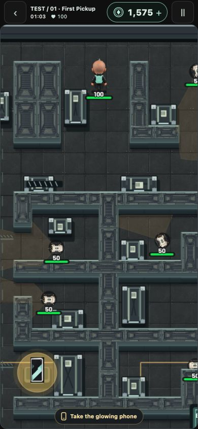
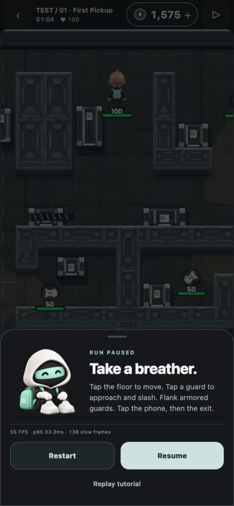
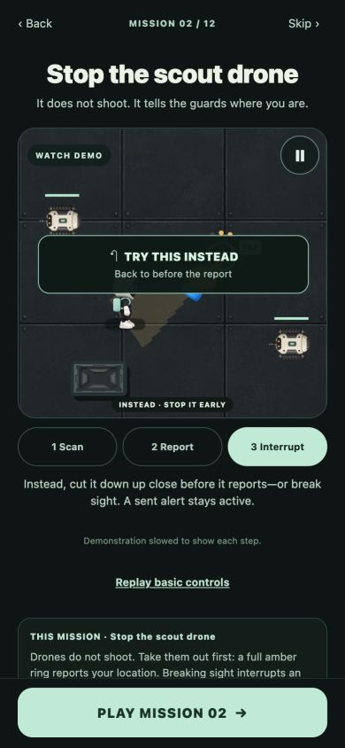
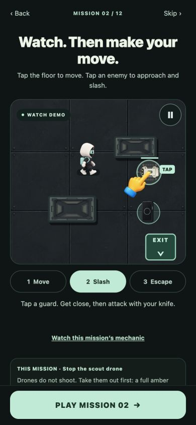

1 October 2026 · Browser preview · No APK built
359 game tests and 82 backend tests passed. Typecheck, web export and pinned-rule checks passed. The isolated commit snapshot passed typecheck, rules and all 82 backend tests; the full working tree also passed 89 backend tests, including seven unrelated promotion tests. Earlier runs exposed stale test assumptions and replay-worker startup latency; both were fixed and tests rerun.
| Expected | Observed | Evidence |
|---|---|---|
| Tap an enemy, approach and slash | Passed; tutorial drone and a mission-2 normal guard defeated at contact. No courier projectiles. | Browser interaction + melee tests |
| Walls, cancel and repeated taps remain safe | Passed; impact rechecks cover/range, floor cancels, failed routes back off | Deterministic regression tests |
| Heavy front blocks; rear is vulnerable | Passed; front 0, side 20, rear 75 damage | Contact geometry tests |
| Campaign remains completable | All 12 completed by recorded ordinary input and verified replay | Automated, not twelve manual wins |
| Future weekly knife missions work | 9 wins across three future weeks | Results |
| Old scores and claims retain rules | Archived engine comparisons and backend credit/replay tests passed | Revision 3–14 compatibility tests |
| Teaching uses knife controls; buttons stay reachable | Checked basic/drone lessons at 390 × 844 | Screenshots below |
| Fast simulation under repeated taps | Sampled p95: 3.59 / 0.24 / 0.77 ms on missions 1 / 6 / 12 | Desktop engine timings |
| Smooth rendering | Observed browser panel: 55 FPS, p95 33.3 ms. Not a 60 FPS sign-off. | Phone-size browser, loaded desktop host |
| Physical Android haptics and frame pacing | Not tested. No APK requested. | Requires later device pass |




A later exposed approach in mission 2 died to guard fire; this report does not claim a manual campaign win. Production backend rollout and weekly activation remain separate release steps. No payment was made. Dated older gameplay media was preserved.